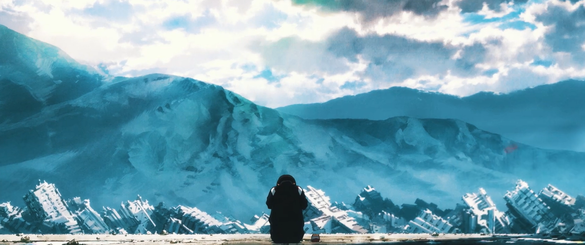
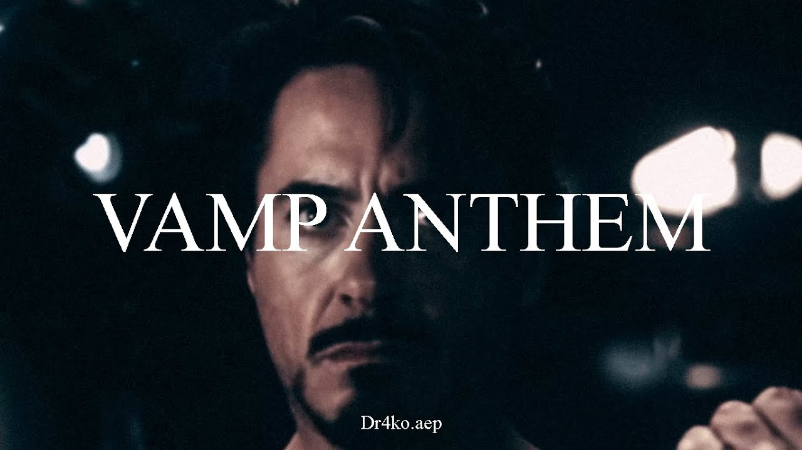
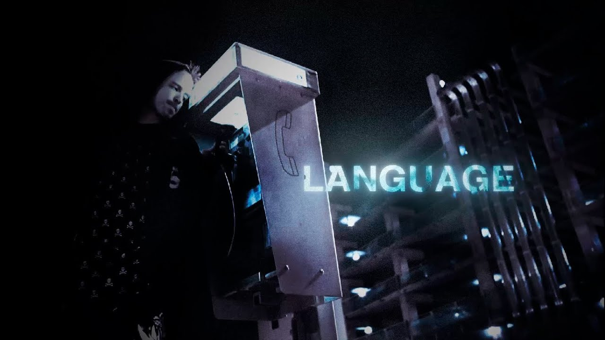

BREAKTHROUGH.EXE
Projeto realizado para uma demonstração de composição audiovisual com base no anime Neon Genesis Evangelion
Saiba mais

VAMP ANTHEM
Projeto com o fim de testar novas tipografias e novos conceitos a partir do filme Guerra Civil (Marvel)
Saiba mais

LANGUAGE
Projeto prezando trazer uma espécie de sentimento ao espectador / mutualidade
Saiba Mais